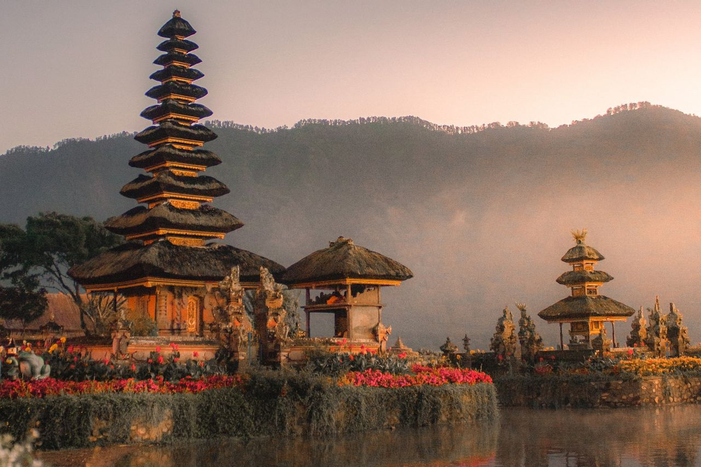
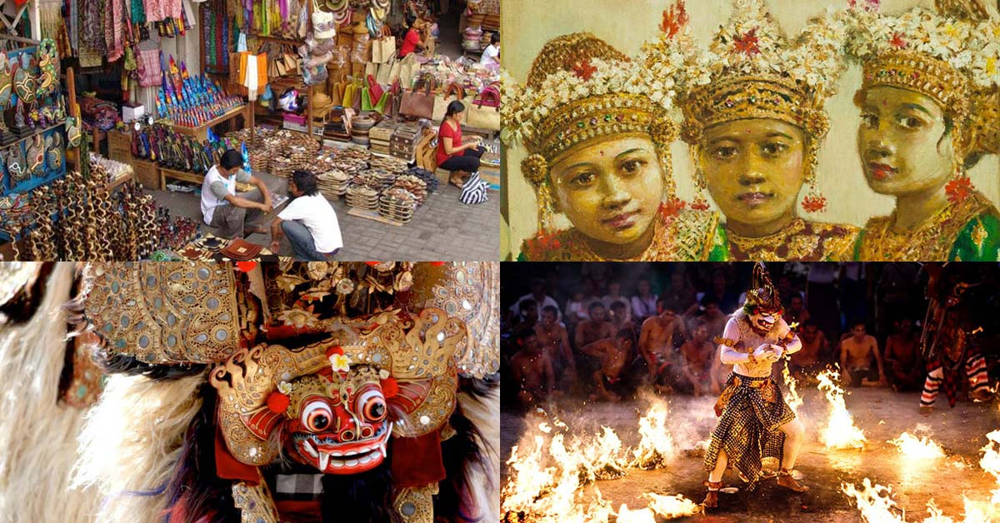
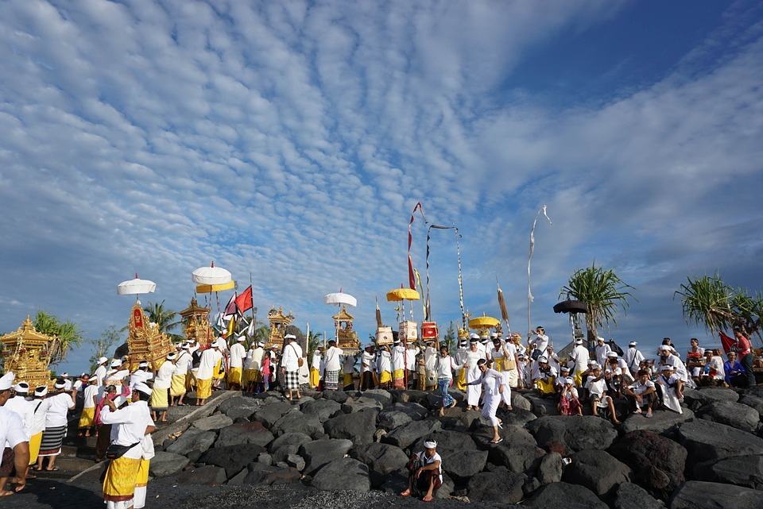

Kebudayaan Local Adat BALI

Pada halaman ini, Saya mengulas sedikit tentang macam-macam ataupun kumpulan dari
kebudayaan lokal Bali, serta berbagai jenis budaya yang masih kita temukan dan terjaga
lestari sampai saat ini. Seni, Agama, Tarian, Musik dan yang lain menjadi ciri khas
tersendiri di pulau Dewata ini.
Masyarakatanya juga begitu kuat dalam memperkembangan teknologi yang berkembang
pesat di dalam berbagai gempuran budaya luar terutama pengaruh budaya asing,
termasuk juga perkembangan teknologi yang berkembang pesat yang bisa mempengaruhi
pola pikir dari masyarakat Bali.
Tetapi demikian, budaya-budaya yang sudah diwariskan oleh nenek moyang kita
harus tetap di lestarikan dan tidak boleh ada campur aduk budaya luar.
Kita Sebagai Penerus Kebudayaan Local Harus Bangga Dengan Budaya Kita Dan Kita Harus Lestarikan Yang Sudah Diberikan!!!

Pelestarian Seni dan Budaya Merupakan Tanggung Jawab
Bersama. Kebudayaan memegang peranan penting dalam
kemajuan suatu bangsa. Negara memajukan Kebudayaan
Nasional Indonesia di tengah peradaban dunia dan menjadikan
Kebudayaan sebagai investasi untuk membangun masa depan.
Keberagaman Kebudayaan daerah merupakan kekayaan dan
identitas bangsa yang sangat diperlukan untuk memajukan
Kebudayaan Nasional Indonesia di tengah dinamika
perkembangan Teknologi dan Budaya Luar.
Maka dari itu kita sebagai pemuda penerus Bangsa dan kebudayaan
NenekMoyang kita harus dijaga dan dilestarikan. Jangan sampai kita
mencampur adukan budaya kita dengan budaya luar.
Khususnya di Bali, kita harus mengembangkan apa yang sudah
diberikan seperti: tari-tarian, gambelan, adat, lingkungan, budaya,
dan yang lain.
DAFTAR WARISAN BUDAYA NENEKMOYANG DI PULAU BALI/SERING DISEBUT PULAU DEWATA

Sejumlah tradisi unik yang disuguhkan menjadi sebuah atraksi dan sebagai suguhan bagi
wisatawan yang liburan ke pulau Bali. Budaya serta tradisi unik tersebut masih bisa
berkembang dan dilestarikan sampai sekarang ini sangat berkaitan dengan keyakinan
masyarakat akan ritual atau prosesi yang terbungkus dalam sebuah tradisi.
Keyakinan masyarakat akan tradisi yang dilakukan oleh warga pada sebuah tempat,
berdasarkan keyakinan warga setempat, seperti keyakinan akan terjadi musibah jika
tradisi atau ritual tersebut tidak dilakukan.
Juga karena berhubungan dengan keyakinan beragama untuk penghormatan kepada
Tuhan ataupun pada leluhur, sehingga menjadi sebuah budaya bagi masyarakat di pulau Bali.
Tradisi unik yang digelar pada sejumlah tempat di pulau Bali tersebut, menjadi hal yang
istimewa untuk dinikmati oleh wisatawan, apalagi mereka yang kebetulan liburan di pulau
Dewata, bisa menemukan sejumlah kebiasaan atau hal-hal tradisional pada zaman
modern sekarang ini akan kan mendapatkan pengalaman istimewa yang tidak bisa
ditemukan di daerah lainnya.
Macam-Macam Budaya Dan Tradisi Unik Di Pulau Bali
1. Pemakaman Desa Trunyan
2. Tradisi Mekare-Kare
3. Tradisi Omed-Omedan
4. Tradisi Mekotek
5. Gebug Ende Seraya
6. Tradisi Mesbes Bangke
7. Tradisi Makepung
8. Tradisi Megibung Di Karangasem
9. Tradisi Mesuryak
10. Upacara Melasti
11. Pawai Ogoh-Ogoh
12. Hari Raya Nyepi
Berikut adalah daftar-daftar tradisi unik yang ada di Bali
untuk penjelasannya kita lanjut ke halaman Warisan Budaya. . . . . . . .